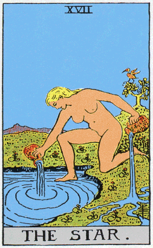
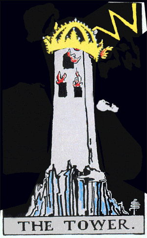
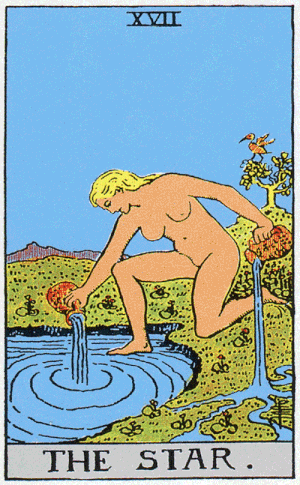
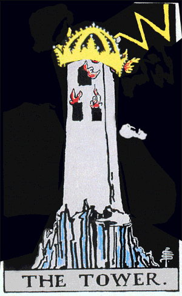

t-ar-ot
ROLE: Creative Technologist (aka Unity User), Designer
COLLABORATORS: Patrick Warren
COLLABORATORS: Patrick Warren
T-AR-ot is an ongoing collaboration with Patrick Warren to bring the Major Arcana to life with augmented reality. As a test case we highlighted The Star, Death, and The Tower.
This project uses Unity and Vuforia.